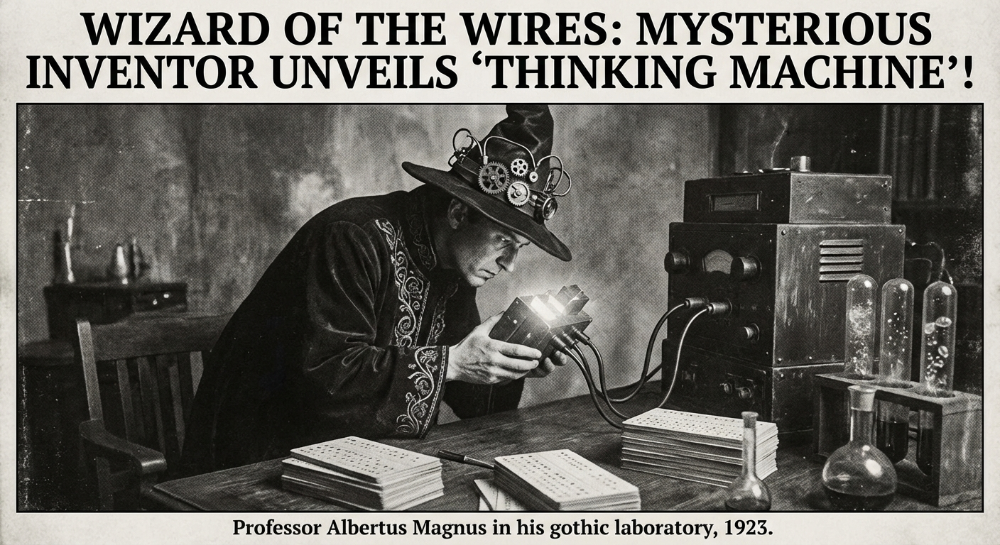

Morning Edition
6:00 AM CSTMarkets & Finance
AI Stocks Jump Amid 2026 Optimism
Artificial intelligence stocks surged as 2026 markets opened with a broadly positive outlook. While broader indexes showed mixed results, the tech-heavy Nasdaq led gains, fueled by persistent investor confidence in AI scaling and commercialization.
— Source: NBC News BusinessPrivate Credit Exposure Risks
Analysts are raising alarms over private credit exposure as the market continues its rapid expansion. Concerns center on which institutional investors will bear the burden in the event of a significant downturn, with "sticky inflation" complicating the outlook.
— Source: Bloomberg GraphicsSelective Momentum in PE
The Private Equity landscape remains defined by selective momentum, with a heavy focus on firms capable of navigating regulatory shifts and leveraging deep operational expertise to generate returns in a high-interest environment.
— Source: Cooley PE ReportTech & AI
The Rise of Autonomous AI Agents
The tech narrative has pivoted sharply from conversational chatbots to autonomous AI agents. These systems, capable of executing complex workflows without human intervention, are now the primary focus for venture capital and blockchain development.
— Source: The Market PeriodicalFriday's Dev Wisdom
Friday is Freya's day—a time for completion and reflection. The Waxing Crescent (4%) reminds us that even the smallest sliver of light can guide a journey. In code, it is the first successful test after a thousand failures. The equinox balances day and night, just as you must balance your visionary architecture with the practical reality of implementation. Plant your flags today.
— Source: Developer's Equinox Manifesto
The Equinox Architect: Friday's Waxing Crescent — Renewal through Code.
"The equinox represents the perfect balance of light and shadow, but for a creator, it is a tipping point. Your code is rarely in such equilibrium; it is always either growing or decaying. Today, choose growth. Let the arrival of spring (or fall) trigger a refactor of the spirit. Don't fear the complexity you've built—embrace it, refine it, and then release it. A commit today is a seed planted for the next quarter. Make it count."— Friday's Developer Equinox
Sagittarius Horoscope
As the Equinox arrives, your fiery Sagittarius energy meets a fresh seasonal shift. Expect a surge of intellectual clarity in your code—today, refactoring feels less like a chore and more like a rebirth. Watch out for off-by-one errors in your ambitious new project; your vision is wide, but the devil is in the documentation. The universe is aligning to reward your long-term focus, provided you can handle the short-term bugs with grace. Trust the process, Archer.
— Source: Adapted from Celestial Cycles, Mar 20, 2026World & US News
-
Energy War Escalates:
Tensions in the Middle East reached a new peak as strikes on major natural gas facilities disrupted global energy markets. Regional powers have called for immediate de-escalation as energy prices fluctuate.
-
Geopolitics & Elections:
Global markets are bracing for a year of volatility driven by U.S. midterm elections and diverging monetary policies among major central banks. Geopolitical risk remains the top concern for 2026 investors.
-
Humanitarian Crisis:
The United Nations has issued an urgent flash appeal for Lebanon as regional conflicts continue to displace thousands. Humanitarian organizations warn of a mounting infrastructure collapse if aid is delayed.
-
"Is WWIII Here?":
Record weapons spending and intensifying decisive rhetoric from global powers have analysts debating the stability of the current world order. Conflict counts have reached historical highs in multiple regions.
Active Reminders
- Build Oomi iOS and Android app
- Plaid Integration Research
- Connect Nemu to Notion
- Research VPN/proxy services
- Create security OpenClaw bot